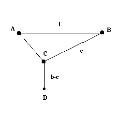

Marquis De L'Hopital

AB is a beam 1m long. AC is a rod free to pivot at A and with a freely spinning pulley at C.
A rope is fixed at B, passes over the pulley at C and hangs vertically down to a weight at D.
If the length of the rod AC is 40cm, and the length of the rope BC+CD is 1m, find the greatest depth that D can reach below AB.
Based on Marquis De L'Hopital (1661−1704) analyze des infiniment petits
From a paper on optimization using the TI83 Calculator
Roger Fentem - College of St Mark and St. John